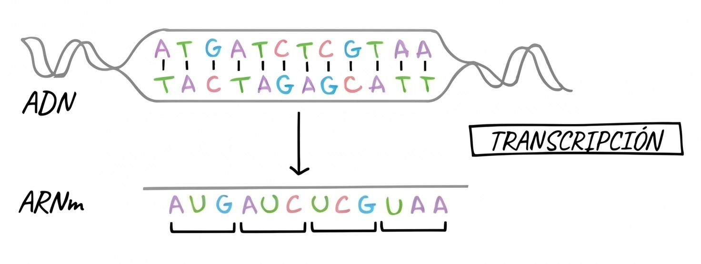

Transcripción del ADN: Fundamento Teórico y Transformación de Cadenas
La transcripción es el proceso celular mediante el cual la secuencia de desoxirribonucleótidos de un gen se transfiere selectivamente a una molécula de ARN mensajero (ARNm) monocatenario. Este proceso constituye el primer paso fundamental en la expresión génica.

1. Contexto Teórico
Principios Biológicos Clave
- Direccionalidad Estricta: La ARN Polimerasa recorre la hebra molde físicamente en dirección \(3' \to 5'\) y sintetiza la molécula de ARNm en sentido \(5' \to 3'\).
- Síntesis de novo: A diferencia de las ADN polimerasas durante la replicación, la ARN polimerasa no requiere cebador ni extremo \(3'\text{-OH}\) previo para iniciar la adición de ribonucleótidos trifosfato (rNTPs).
- Regla del Uracilo (\(U\)): En el ARN, la base pirimidínica Uracilo (U) sustituye a la Timina (T). Frente a una Adenina (A) en el molde de ADN, la polimerasa incorpora Uracilo en el ARNm.
- Asimetría de Hebras (Molde vs. Codificante):
- Cadena Molde (Template / Antisentido, \(3' \to 5'\)): Es la hebra que la polimerasa lee físicamente. Su secuencia es complementaria y antiparalela al ARNm.
- Cadena Codificante (Coding / Sentido, \(5' \to 3'\)): Es la hebra complementaria a la molde. Su secuencia es idéntica al ARNm, con la única diferencia de contener \(T\) en lugar de \(U\).
ADN Codificante (5'→3'): 5'- A T G C C A A C G T A -3'
| | | | | | | | | | |
ADN Molde (3'→5') : 3'- T A C G G T T G C A T -5'
↓ ↓ ↓ ↓ ↓ ↓ ↓ ↓ ↓ ↓ ↓
ARNm Transcrito (5'→3'): 5'- A U G C C A A C G U A -3'
Etapas del Proceso
| Etapa Biológica | Mecanismo Molecular |
|---|---|
| Iniciación | Reconocimiento de secuencias promotoras (p. ej., Caja TATA) y acoplamiento de la ARN Polimerasa. |
| Elongación | Apertura transitoria de la doble hélice (~17 pb, burbuja de transcripción) y polimerización continua de rNTPs. |
| Terminación | Reconocimiento de señales de parada, colapso de la burbuja y liberación del transcrito primario. |
2. Desglose de Transformación de Cadenas en transcripcion.py
En esta sección se analiza exclusivamente la lógica algorítmica de manipulación de secuencias implementada en transcripcion.py.
Paso 1: Mapeo de Transcripción y Complementariedad
Para traducir las bases nitrogenadas respetando la bioquímica del ARN, se definen diccionarios:
# Complementariedad durante la transcripción: Cadena Molde ADN (3'->5') -> ARNm (5'->3')
TRANSCRIPCION_MAP = {
'A': 'U',
'T': 'A',
'C': 'G',
'G': 'C',
'a': 'u',
't': 'a',
'c': 'g',
'g': 'c'
}
COMPLEMENTO_ADN = {
'A': 'T', 'T': 'A',
'C': 'G', 'G': 'C'
}
Explicación:
TRANSCRIPCION_MAP formaliza la regla de complementariedad de la ARN Polimerasa: la Timina del ADN se empareja con Adenina, pero la Adenina del ADN genera Uracilo (U). COMPLEMENTO_ADN permite reconstruir la hebra opuesta del dúplex bicatenario según las reglas canónicas de Watson-Crick.
[ ADN Molde (3'->5') ] [ ARNm Sintetizado (5'->3') ]
A =======> U
T =======> A
C =======> G
G =======> C
Paso 2: Resolución de Polaridad (Molde vs. Codificante)
El simulador determina la correspondencia entre ambas hebras parentales a partir de la entrada introducida:
adn_entrada = cadena_adn_5_3.upper().strip()
if usar_cadena_como_molde:
cadena_molde_3_5 = adn_entrada
cadena_codificante_5_3 = "".join(COMPLEMENTO_ADN.get(b, 'N') for b in cadena_molde_3_5)
else:
cadena_codificante_5_3 = adn_entrada
cadena_molde_3_5 = "".join(COMPLEMENTO_ADN.get(b, 'N') for b in cadena_codificante_5_3)
Explicación:
Por convención, las secuencias biológicas suelen introducirse en orientación \(5' \to 3'\) (cadena codificante). El código normaliza el texto y obtiene mediante COMPLEMENTO_ADN la hebra complementaria que funcionará como molde (\(3' \to 5'\)). Si el parámetro usar_cadena_como_molde es verdadero, se invierte la asignación para operar sobre la hebra indicada.
+-------------------------------------------------------------------------+
| Entrada: "ATGCGATCTAG" |
+-------------------------------------------------------------------------+
|
+--> Cadena Codificante (5'->3'): 5'- A T G C G A T C T A G -3'
| | | | | | | | | | | | (Watson-Crick)
+--> Cadena Molde (3'->5'): 3'- T A C G C T A G A T C -5'
Paso 3: Polimerización de la Cadena de ARNm
La conversión de la secuencia molde a la molécula de ARN mensajero se realiza a través de la función transcribir_cadena_molde:
def transcribir_cadena_molde(cadena_molde_3_5: str) -> str:
"""
Transcribe una cadena molde de ADN (3' -> 5') a ARNm (5' -> 3').
Aplica la regla biológica donde la Adenina del molde da lugar a Uracilo en el ARN.
"""
return "".join(TRANSCRIPCION_MAP.get(b.upper(), 'N') for b in cadena_molde_3_5)
# Invocación principal:
arn_mensajero_5_3 = transcribir_cadena_molde(cadena_molde_3_5)
Explicación:
La función itera nucleótido a nucleótido sobre la cadena molde (\(3' \to 5'\)). Gracias al diseño antiparalelo, el resultado de recorrer la cadena molde de izquierda a derecha produce directamente el ARNm ordenado en su dirección natural de síntesis (\(5' \to 3'\)). Si aparece un carácter desconocido, se sustituye por 'N'.
Molde (3'->5'): 3'- T A C G C T A G -5'
| | | | | | | |
v v v v v v v v
ARNm (5'->3'): 5'- A U G C G A U C -3'
Paso 4: Segmentación Dinámica de la Burbuja de Transcripción
Para representar el desenrollado local de la doble hélice sin alterar las cadenas completas, se extraen subcadenas correspondientes al centro del gen:
mitad = len(cadena_codificante_5_3) // 2
inicio_burbuja = max(0, mitad - 5)
fin_burbuja = min(len(cadena_codificante_5_3), mitad + 5)
# Segmentos hebra codificante
codif_pre = cadena_codificante_5_3[:inicio_burbuja]
codif_bur = cadena_codificante_5_3[inicio_burbuja:fin_burbuja]
codif_post = cadena_codificante_5_3[fin_burbuja:]
# Segmentos hebra molde
molde_pre = cadena_molde_3_5[:inicio_burbuja]
molde_bur = cadena_molde_3_5[inicio_burbuja:fin_burbuja]
molde_post = cadena_molde_3_5[fin_burbuja:]
# Transcrito naciente en la burbuja
arn_bur = arn_mensajero_5_3[inicio_burbuja:fin_burbuja]
Explicación:
Biológicamente, la ARN Polimerasa mantiene abierta una burbuja de aproximadamente 10 a 17 nucleótidos durante la elongación. Mediante técnicas de slicing en Python, el código delimita la zona activa (codif_bur, molde_bur, arn_bur) separándola de los extremos donde el ADN permanece bicatenario (pre y post).
Doble Hélice (cerrada) Burbuja Abierta (~10 pb) Doble Hélice (cerrada)
5'- ... [codif_pre] --------\ [codif_bur] /-------- [codif_post] ... -3'
\ /
[ARN Polimerasa]
ARNm: [arn_bur] -->
/ \
3'- ... [molde_pre] --------/ [molde_bur] \-------- [molde_post] ... -5'
Paso 5: Alineamiento Nucleótido a Nucleótido
Para auditar la equivalencia de información en cada posición de la secuencia, el algoritmo construye una estructura de correspondencia posicional:
alineamiento = []
for i in range(len(cadena_codificante_5_3)):
c_cod = cadena_codificante_5_3[i]
c_mol = cadena_molde_3_5[i]
c_arn = arn_mensajero_5_3[i]
alineamiento.append({
"posicion": i + 1,
"adn_codificante": c_cod,
"adn_molde": c_mol,
"arnm": c_arn
})
Explicación:
Este bucle sincroniza posición por posición los tres estados del nucleótido: el codificante, el molde y el transcrito. Demuestra formalmente que el ARNm copia la secuencia codificante con exactitud conservando la polaridad \(5' \to 3'\), alterando únicamente el uso de Uracilo en lugar de Timina.